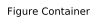
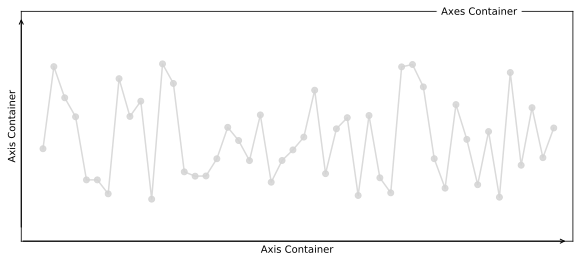
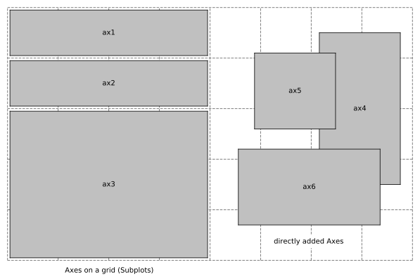
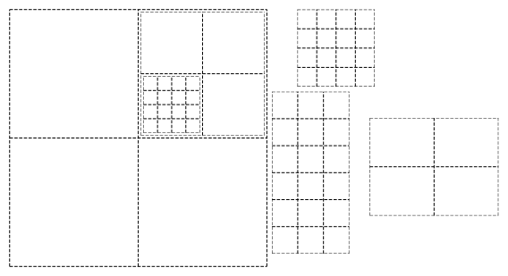
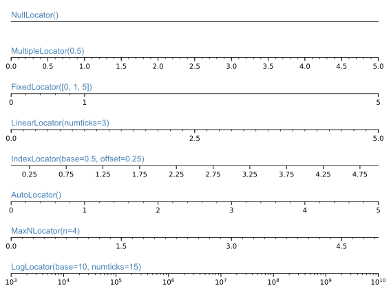

grade
grade
PLOT LIKE A PRO
In this series you will learn how to create animations with Python starting with an overview about plotting in general. If you take only one idea out of this tutorial, let it be this:
DO NOT TRUST THE DEFAULT! - CUSTOMIZE EVERYTHING!
Hence this tutorial and all the following are not oriented towards students just starting out and searching for coding advice or directions in how to set up their environment. - If however you already have some experience coding and using Python, and you want to start visualizing your data or simulation without moving to another tool, and do so properly, this is the guide you have been searching for.

Why choose Python with Matplotlib?
There are many great tools to create interactive visualizations and animations for science most notably Mathematica and Matlab. Many academics in STEM use them, but there is no discussion that if you want to create beautifull, solid and creative visualizations that are to be published, Matplotlib is the way to go.
It offers the precision other tools lack and creates clean plots without aliasing, correct vectorizations and formatting no matter what backend. There is nothing you can't access and thus you can customize anything you desire. Every single plot object like figures and axes or even individual ticks, lines, labels or points can be changed to fit your needs.
All of that can be done with Python which is the most popular programming language in STEM research mostly because it's very high level and therefore very easy to use especially for bigger projects. It offers a wide range of other modules besides Matplotlib that can be imported to extend it's functionality and the community is working relentlessly to enable anyone to do anything with Python. You want to create and test new algorithms and design circuits for quantum computing? You want to prototype custom machine learning models as fast as possible? Analyze big data? Run with Python.
Both are completely free for everyone.

How do I work through this?
I encourage you to create a Jupyter notebook for this particular tutorial so that you can play around with the given codesnippets and examples, but later on, when we start animating, it will be best to work with a simple editor and the terminal.
Please install Numpy aswell if you dared not to do until now despite it being the fundamental Python package for scientific computing. Do not use Pylab all the much if at all, please.
The Matplotlib API
Most tutorials are very focused on very rudimentary aspects of this library or only show you a very special example. Let's do things differently and get at least some overview so that we can actually form the general understanding we need to truly be able to grow our plotting powers.
With Matplotlib you have access to 56 submodules.
You might find this a bit overwelming at first, but the module is carefully desgined to be very object oriented and the naming conventions are mostly quite intuitive as you will realize soon. In fact, you won't even really have to understand anything at first, because you can simply load matplotlib.pyplot for a command line approach which makes it very easy to get the basics done quickly. (Sadly Matplotlib's biggest issue is it's API. This is mostly because it is heavily influenced by Matlab.) These two aspects, the pyplot and the object oriented approach are the most common ways of using this vast library.
Primitives & Containers
In Matplotlib objects are seperated into primitives and containers.
"The primitives represent the standard graphical objects we want to paint onto our canvas: Line2D, Rectangle, Text, AxesImage, etc., and the containers are places to put them (Axis, Axes and Figure). The standard use is to create a Figure instance, use the Figure to create one or more Axes or Subplot instances, and use the Axes instance helper methods to create the primitives." Read more.
Most of the time we will be interested in customizing the primitives like the font family of a text or the thinkness and color of a line.
The class from which all other objects inherit their basic properties is the artist. It's list of basic options to configure is quite long. You can use matplotlib.artist.getp() to print out the properties of any object. This way you may change the background colors, the positioning order / z-order or fix objects so that they don't get animated etc.. In general, properties of any object 'o' can be changed with o.set(alpha=0.5, animated=False) for example.
The reason for why it is called Artist is that this is where Matplotlib defines how to render objects to the canvas.
The complete image we create is the matplotlib.figure.Figure , and it holds all the axes objects.
The axes container holds the vast majority of all the objects used in a figures. Here we can directly add our data and create a plot, which makes this object the center of our attention most of the time. There are a bunch of helper methods like ax.plot(), ax.scatter() or ax.imshow() which enable the display of your data inside these containers. We do not have to limit ourselves to simple x-y-plots, yet as the name of this object also tells us, there are still the axis container that we have to explore:
The Axis is the place where our data is actually stored and will be generated automatically by the named helper methods. This instance of the Artist then draws the tick lines, the grid lines, the tick labels as well as the axis label, which can then be customized seperately, too!
The then created Tick object is the container which holds these tick and grid line instances, and also the label instances to name each axis. We will learn to customize all of those soon!
Filling Figures
Let's start at the top by defining our figure. We'll then be adding axes or subplots, fill it with the data and then fine tune the details! - After importing the helpfull little pyplot submodule as plt, we create our figure, define the axes independently and then add them together by writing:
import matplotlib.pyplot as plt
# create figure
fig = plt.figure(figsize=(2.5,2.5),(dpi=200))
# define axes
ax1 = plt.Axes(fig=fig, rect=[0.75, 0.75, 0.5, 0.5], facecolor='crimson')
ax2 = plt.Axes(fig=fig, rect=[0, 0, 1, 1], facecolor='steelblue')
# add axes to figure
fig.add_axes(ax2)
fig.add_axes(ax1)
plt.show()Which returns a plot similar to the one shown here:

Here is a nice post on figures. - In some of the examples we will visualize the propagation of a simulation and then measure a few features we are interested in and plot them in an additional subplot next to the main one. This comes handy also when we want to plot a series of images from your animation in your paper.
I've already explained that Matplotlib uses the Axes container to hold and draw data. Mulitple plots in a single figure are called subplots and Matplotlib offers an additional functionality add_subplot() to simplify their creation.
Although both add_axes()and add_subplot() create a matplotlib.axes.Axes object, the way they do so is quite different. We can useadd_axes() and specify the exact absolute position of the rectangle of this object on the canvas. But this results in us having to constantly tweek the positioning as the plot becomes more complicated. Instead of that, we might aswell just call add_subplot() which handles the placing of axes objects in an even grid with a certain number of cells automatically. All we have to do is specify in which cell of the grid the axes should go. When creating subplots, this leaves enough space around the axes for the title, ticks and labels. The positioning changes dynamically as we continue to work on our figure.
Another nice way which allows for subplots to occupy multiple cells as seen in the image is subplot2grid(). The subplots span over several columns and rows of the grid. This functionality builds on another fundamental part, in fact, the grid itself.
We can specify the geometry of the grid in which a subplot will be placed with gridspec(). But not just by defining the number of rows and columns. We can also specify where the grid should be placed and how much distance their should be between subplots etc. ... This allows us to become very creative with our grid designs. We can place multiple grids in a figure and even grids inside grids!
The basic procedure here goes as follows:
import matplotlib.pyplot as plt
# create figure
fig = plt.figure(figsize=(6,8), constrained_layout=False)
# define grid specifications
gs = fig.add_gridspec(nrows=3, ncols=3, left=0.2, right=0.90, wspace=0.6)
# add subplots to the grid
ax1 = fig.add_subplot(gs[:-1, :])
ax2 = fig.add_subplot(gs[-1, :-1])
ax3 = fig.add_subplot(gs[-1, -1])
plt.show()Go on and test it out. It can easily be extended for more complicated grid arrangements. Read more.
After adding the grid specifications, embedding axes as subplots on the grid or grids and filling in the data, then - if the general ratios of the image seem right - we start finalizing the details.
Plotting Details
They are small but well formatted ticks are integral for publishing-ready figures and again Matplotlib enables us to fully configure them, both major and minor ticks independently.
Tick formatters can be used to change their appearance the way we want, deleting the labels on the ticks, display them as percentages and more.
Tick locators are used to specify where ticks should appear. These derive from the base class matplotlib.ticker.Locator.
(Note: Because handling dates as ticks can be especially tricky matplotlib provides additional locators in matplotlib.dates. Read more)
The tick locations can be changed either change the scaling when setting up the axes object like here:
ax = plt.axes(xscale='log', yscale='log')Or by importing the ticker class and adding one or two lines similar to this example:
import matplotlib.ticker as ticker
ax.xaxis.set_major_locator(ticker.FixedLocator([0,0.4,0.7, 1]))We can hide both ticks and labels using
ax.xaxis.set_major_locator(plt.NullLocator()) # x-axis without ticks
ax.xaxis.set_major_formatter(plt.NullFormatter()) # x-axis without labelsThe same holds true for minor ticks, which aren't visible by default.
Text, Math & Annotations
Most of the time text of any kind won't be necessary or will in fact only confuse the recipient looking at the figure. Relevant text must usually be added next to the picture and not be a part of it as to not distract or confuse. Nonetheless displaying some math, units and axes describtions are essential. To keep the figure as visually clean as possible and get it's message across without throwing around with ugly fonts, we need to know how to customize these as well.
Matplotlib supports any type of font you throw at as long it is installed at your system and also a .ttf or .afm file. Here are a few more or less random examples:

Certain font families can change the personality of a plot drastically. In general, less is more, Comic Sans is a joke and if you can go without text, go without. I'll explain design guidelines like these quite extensively in the second part of the introduction, Visual Principles .
The general method of changing any text font to a new one (here 'fontname') goes somewhat like this:
import matplotlib.pyplot as plt
import matplotlib.font_manager as fm
prop = fm.FontProperties(fname='/usr/share/fonts/truetype/fontname.ttf')
plt.title('text', fontproperties=prop)
plt.show()If a font is not rendered this may have two reasons. Matplotlib might either need to refresh it's font cache:
matplotlib.font_manager._rebuild()Title & Subtitle
Labels
Annotations
Text
Math
By importing Matplotlib's rc module
# for LaTeX font
from matplotlib import rc
rc('font',**{'family':'sans-serif','sans-serif':['Helvetica']})
rc('text', usetex=True)we can add LaTeX equations to our plot. For example, we may write
# red LaTeX expression
plt.text(0.25,8.5,r"$(x-1)^3 + 1$", color="crimson", size=15) to plot the expression \((x-1)^3 + 1\) at the center of a given plot.

By changing the rc parameters you have now made changes to the style. To reverse this, you can use matplotlib.style.use('default') or rcdefaults() to restore the default rc parameters.
Style
It turns out that Matplotlib already has a big library of styles you can choose from at the beginning of you script. Just like we reset the style in the previous section we can import a style by writing:
matplotlib.style.use('ggplot')(In this case, the imported changes to the style are designed to emulate the look of a plotting package for R.) We can also load multiple styles one after another to create mixed versions where each following loaded style overwrites some special rc parameters. Please take a peak at the style sheets but don't think we are finished here. A master of his craft creates his own defining style. Let's look at how we can write our own that we can save as a seperate file and then simply load with this one line.
Other Types of Plots
We just saw that we can't only plot simple functions but also create histograms. In fact, Matplot offers a wide range of other incredibly usefull functionalities I won't even try to get into here. But let me tell you about a couple important ones.
- Scatter point plot
- Hexbin density plot
- Image plot
- Field plot
Other Libraries
Forming a solid understanding of Matplotlib is crucial in order to master other plotting libraries since most of the build on it. They often simplify the process or add some major functionalities.